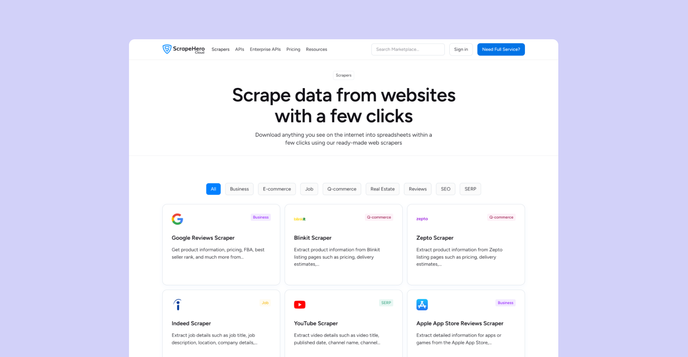
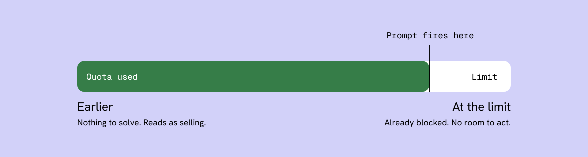
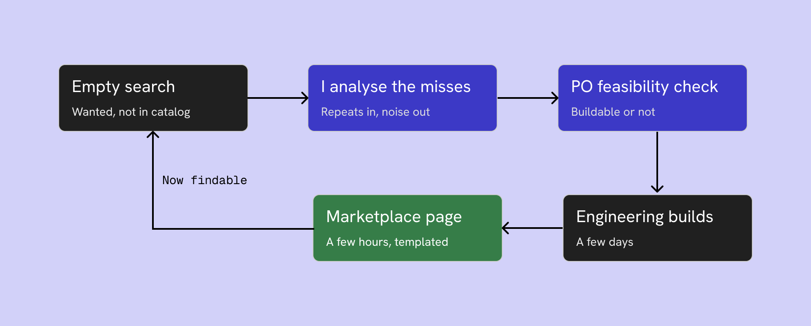

ScrapeHero Cloud
Self-Serve Data Product
Responsibilities
Owned UX on Cloud, a live self-serve product with paying customers. Three-month scope. Found why users fell out and fixed it.

Context
ScrapeHero Cloud is a self-serve product. Users browse a Marketplace of pre-built scrapers and APIs, subscribe, and run them. Its users are students, researchers, and developers. That mix is why Cloud carries an API category alongside the pre-built scrapers: developers want the endpoint, students and researchers want to grab data without building anything.
The product worked and had customers. So opinion was cheap and behaviour was not.
The method
I started with the people who talk to users. I ran sessions with sales and the product owners to collect what they carry: what gets asked for on calls, what confuses people in demos, which complaints repeat. That gave me the user picture and a shortlist of known issues before I opened the product.
Then I checked it against behaviour. I was given PostHog access and reviewed session recordings one by one, watching where users hesitated or dropped. Sales told me what users say. The recordings showed me what they do. Where the two agreed, I built.
The third signal was the Marketplace search bar, which told me what users wanted and could not find.
I did not start from a redesign plan. I fixed things one at a time across three months. Most of the leak was at first-run: a live product loses returning users slowly, but it loses new users in the first few minutes. So the work concentrated there.
Rebuilding the new-user path
Cloud, after login
Dashboard. Nothing to act on until you run something.
Scraper listing. Something they can run now.
Marketplace, plans
All plans weighted equally. Free reads as one option.
Free plan emphasised. The obvious way in.
Scraper detail page
Create a Project. Learn the system before any value.
Use this scraper. Value before any setup.
Login dropped users on the dashboard. The recordings showed new users landing on an empty dashboard and leaving without running anything. I routed login straight to the scraper listing.
The free plan carried the same weight as the paid ones. Presented level with everything else, it read as one option among several rather than the way in. Sales heard the question repeatedly and the recordings showed people leaving before finding out. I gave it emphasis in the Marketplace, where the decision actually gets made.
The primary CTA assumed a mental model most users did not have. Every scraper read "Create a Project." That front-loads system structure before any value. A developer might tolerate it, but students and researchers, the larger share of new users, do not think in projects. They want the data. I changed the CTA to "Use this scraper" with a first-run experience that skips project setup.
The interface fix only went so far. I proposed tutorial videos in the stakeholder sessions and led the team to build them, so activation got solved on two fronts, interface and onboarding.
The upgrade moment
Free users had an upgrade button on the dashboard. Clicking it opened Settings, with plans and subscription buried in a sub-tab. The recordings showed people hitting the wall and leaving rather than hunting for it. I pointed the button straight at plan selection.
That fixed where it went. It did not fix when it appeared. Nothing prompted an upgrade at the moment a user was actually running out.
Adding a prompt is obvious. When to trigger it is not. Too early and it is pressure: a user with plenty of quota left does not need an upgrade, and showing one makes the product feel like it is selling rather than serving. Too late, at the hard limit, and it is useless. The user has already hit the wall and the frustration is already there.
I tied the prompt to the quota itself and fired it as the user approached the limit, while they still had room to act, framed as a heads-up rather than a block. The cost I accepted: a share of users see a prompt slightly before they strictly need it. I took that over the alternative, where a user hits zero mid-task and blames the product.

Too early and the prompt sells. At the limit it is useless. It fires while the user still has room to act.
Growing the catalog from demand
The Marketplace search bar was not just navigation, it was a demand signal. Users typed what they wanted. When we did not have it, that search was a miss, and a miss is a user telling you exactly what to build.
I tracked those misses and prioritised by repetition. A one-off search is noise. A search that repeats across users is a standing unmet need with a market attached. I took the repeated ones to the product owner as build candidates, the ones we could scrape went to engineering, and the Marketplace page came off the templates in a few hours. The catalog grew from what users were already asking for, not from what we guessed they wanted.
Then I made the catalog findable. Every scraper categorised and labelled into its proper industry, so someone browsing by domain lands on the right thing instead of scanning a flat list. Demand decided what we built. Industry structure made it discoverable. The searches fed back too: what users could not find told me which categories were missing, not just which scrapers.

A search with no result is a request. I filtered for repeats, took those to the PO for feasibility, and a templated Marketplace page meant a new scraper was live hours after it was ready.
Building to scale
I designed and built the Marketplace myself, in WordPress and Elementor, and built the design system underneath it: tokens, components, page templates, one place.
The system is what made the catalog sustainable. A new Marketplace page used to take two days and needed a designer and a developer. It now takes about half a day, and a designer does the whole thing. The system removed the handoff, not just the hours.
That is also what made handover possible. My team runs the Marketplace now without me in the loop, because the system decides most of what a new page looks like before anyone opens it.
Impact
Across the three months, subscription conversion improved by approximately 15% and drop-off reduced by approximately 10%, validated against PostHog before-and-after data.
I shipped these fixes as a sequence, not as isolated experiments, so I cannot cleanly attribute the lift to any single one. That is the honest limit of the work. If I ran it again, I would release the CTA change and the quota prompt separately, each with its own measurement window, so every fix earns its own number. The aggregate is real. The attribution is not clean, and I would rather say that than pretend otherwise.
Reflection
Stakeholders told me what users say. Recordings showed me what they do. Search misses told me what they wanted and could not find. None of the three told me why a user hesitated at a screen that tested clean, and the quota trigger point is still a hypothesis I would keep tuning against real data.
The instinct I would carry forward is the one that ran through all three: the users were already telling me what was wrong and what to build. The work was mostly listening.